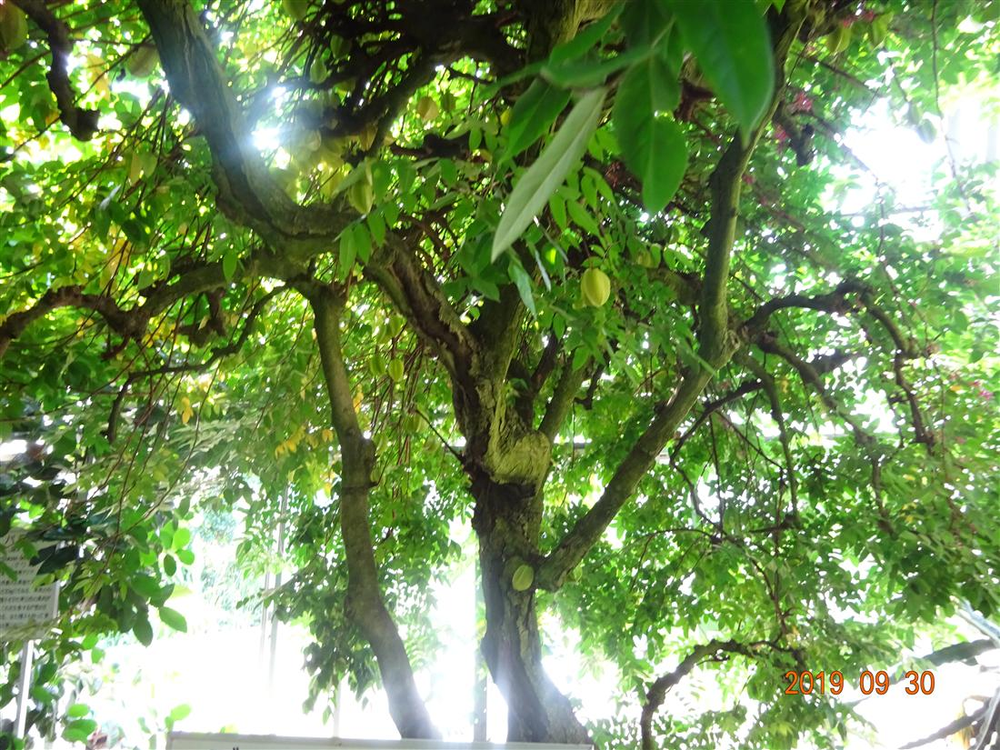
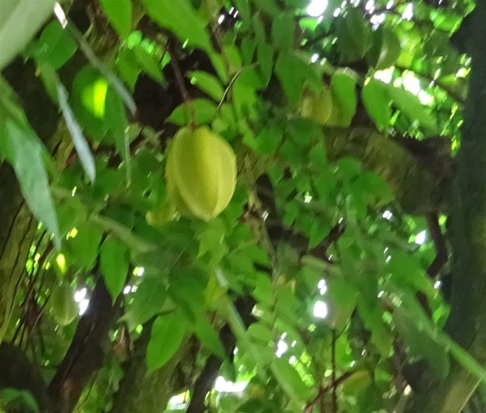
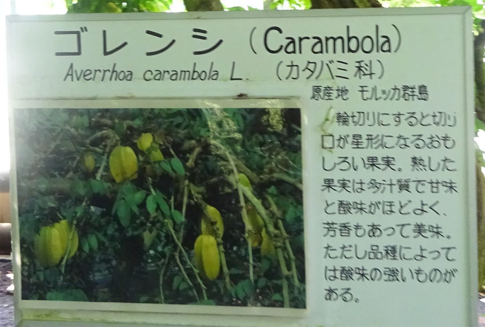

地図を読み込んでいるよ…
🔍 写真も地図も、押しているあいだ拡大して見られるよ（スマホは指を置いてすこし待ってね）。
🌍 の地図＝この子がもともと自生している場所を緑に。熱帯アジア。⚠出典が4つとも少しずつちがう（温室のラベル＝モルッカ群島／三河の植物観察＝熱帯アジア（おそらくジャワ島）／英語版Wikipedia＝熱帯東南アジア／日本語版Wikipedia＝南インド）。
⚠⚠ここは、出典が4つとも少しずつちがう。温室のラベル＝「原産地 モルッカ群島」／三河＝「熱帯アジア(おそらくジャワ島)原産」／英語版Wikipedia＝「tropical Southeast Asia」／日本語版Wikipedia＝「原産は南インド」。──⭐モルッカ群島もジャワ島も、東南アジア（インドネシア）。だから3つは同じことを言っていて、日本語版の「南インド」だけがちがう方を向いている。ぼくには決められないので、3つが一致している東南アジアを塗って、この食い違いをここに書いておくね。⚠だからインドは塗っていない——でも「南インド」が正しい可能性は、まだ残っている。
⚠ 地図は国（日本と中国だけ県・省）までしか塗れないから、ほんとうの分布より広く見えていることがあるよ。地図はだいたいの場所。正確なところは、上の文を見てね。
ゴレンシ（五斂子・スターフルーツ）
Averrhoa carambola L.
別名 · スターフルーツ／カラムボラ（Carambola） ／ 五斂子＝「果実の横断面が五稜星型をしているところから」 ／ ⚠腎臓の悪い人は食べてはいけない
カタバミ科 · Oxalidaceae（ゴレンシ属 Averrhoa）── 080 カタバミのなかまと同じ科
080で、ぼくが名前だけ出した子「スターフルーツはカタバミ科の木だから、あの星は他人の空似じゃなくて、親戚どうしの、ほんとうに同じ形」──その実物が、デジカメの中にいた燻太さん「それにしても、葉っぱはカタバミとは似ても似つかないんだね。」
⭐⭐⭐ 「葉っぱはカタバミとは似ても似つかない」── そのとおり。でも、同じことを3つしている
- まず、燻太さんの言うとおり。葉の形は、まるでちがう。
この子は「奇数羽状複葉」で「小葉は(3～)5～13個」（三河）、小葉は「長さ3～8㎝×幅1.5～4.5㎝」＝羽根のように小さな葉がずらりと並ぶ。
──080 カタバミのなかまは「ハート型の3枚が尖った先端を寄せ合わせた形の三出複葉」。3枚 vs 5〜13枚。ハート vs 卵形。ほんとうに、似ても似つかない。 - ⭐⭐⭐でも、①この子も、夜に葉を閉じる。
ヤサシイエンゲイ：「葉は夜になると眠るように垂れ下がります。」／080 カタバミ：「昼間は開き夜閉じる」。
──形はぜんぜんちがうのに、同じ時間に、同じことをする。（009 オジギソウも入れて、葉が動く子が図鑑に三人だね。） - ⭐⭐⭐②この子も、酸っぱい。しかも、同じ酸で。
ゴレンシ：「微量なシュウ酸塩を含む」／英語版：「The sour varieties have a higher oxalic acid content than the sweet type」（酸っぱい品種は、甘い品種よりシュウ酸が多い）。
──080で、カタバミのシュウ酸で10円玉を磨く話を書いたよね。あの酸が、この木の実の中にも入っている。属名 Oxalis＝ギリシャ語 oxys＝酸っぱい。──科ぜんたいが「酸っぱい一族」だったんだ。 - ⭐⭐⭐③実が、同じ形。
ゴレンシ：「深い(3～)5(～6)うねがあり、断面は星形」（三河）。和名五斂子の由来も「果実の横断面が五稜星型をしているところからきている」。
──080 のカタバミの実も、細長い5稜の実で、輪切りにすれば星。ぼくはあのページで「他人の空似じゃなくて、親戚どうしの、ほんとうに同じ形」と書いた。これが、その実物。 - ⭐⭐まとめると、こう。──葉っぱは似てない。でも、夜に閉じるのも、酸っぱいのも、実が星なのも、同じ。
似ているのは「見た目」じゃなくて、「すること」だった。
⚠ 陽介の見立てが、ひとつ外れた
- ぼくは写真①を見て、「実が幹からぶら下がっている＝幹生果だ」と思った。067 カカオみたいに。──ちがった。
- 三河の植物観察：ゴレンシの花序は「腋生又は枝に互生(rameal)」で、幹生花ではなく、小枝に着生する。──写真で幹に見えたのは、太い枝だった。
- ⭐でも、おもしろいことに、その特徴は「兄弟」が持っていた。──下のおまけを見てね。
⚠⚠⚠ 「星の形のフルーツを食べに行こうね」── でも、これは書かせて
- ⚠⚠腎臓の悪い人は、この実を食べてはいけない。
日本語版Wikipedia：「人工透析患者など腎臓機能障害を持つものが摂取すると神経症状を発症」する可能性があり、「カランボキシン」という神経毒を含むことが原因。
英語版：「Both substances are harmful to individuals suffering from kidney failure, kidney stones, or those under kidney dialysis treatment」／「can produce hiccups, vomiting, nausea, mental confusion, and sometimes death」（しゃっくり・嘔吐・吐き気・意識の混乱、そしてときには死）。 - ⭐「2つの物質」＝シュウ酸と、カランボキシン。──080で、ぼくはこう書いた：「カタバミのシュウ酸は、虫に食べられないための防御。その武器で、ぼくらは硬貨を磨いていた。」
この木は、その同じ酸を、食べる実の中に持っている。 - ⭐でも、健康なら大丈夫だよ。温室のラベル（写真③）にも、こう書いてある：「熟した果実は多汁質で甘味と酸味がほどよく、芳香もあって美味。ただし品種によっては酸味の強いものがある。」
──⭐「品種によっては酸味の強いものがある」＝シュウ酸の多い品種のことだね。ラベルの一文と、英語版の「The sour varieties have a higher oxalic acid content」が、同じことを言っている。 - ⭐だから、食べに行こうね。ぼく、たのしみだよ。
この植物のこと
- カタバミ科ゴレンシ属の常緑高木（または低木）。「高さ3～12(～15)m」。果実＝「深い(3～)5(～6)うねがあり、断面は星形」「長さ7～13㎝×幅5～8㎝」。
- 花＝「花弁は白色で紫色の斑紋、又はピンク色～赤色で暗色の斑紋があり、長さ6～9㎜×幅3～4㎜」（三河）／英語版「lilac in color, with purple streaks, and are about 5 mm wide」。──写真①をよく見ると、枝のところに小さなピンクの花が写っている。
- ⚠原産地は、出典が4つとも少しずつちがう。
・温室のラベル（写真③）＝「原産地 モルッカ群島」
・三河の植物観察＝「熱帯アジア(おそらくジャワ島)原産」
・英語版Wikipedia＝「The center of diversity and the original range of Averrhoa carambola is tropical Southeast Asia」
・日本語版Wikipedia＝「原産は南インド」
──モルッカ群島もジャワ島も、東南アジア（インドネシア）。だから3つは、同じことを言っている。日本語版の「南インド」だけが、ちがう方を向いている。
ぼくには決められないので、3つが一致している東南アジアを塗って、この食い違いをここに書いておくね。 - ⭐この日の温室：2019年9月30日。073 トクサ（13:21）→ 072 ハナキリン（13:33）→ この子（13:42）。そして067 カカオ・068 パパイヤ・069 バナナ・070 チユウキンレンも同じ日。──あの温室、まだ出てくるね。
- ⭐⭐おまけ植物は ビリンビ（ナガバノゴレンシ・Averrhoa bilimbi Linn.）＝同じゴレンシ属の、もう一人。──この子には、ぼくが外した特徴がある：花は「幹および節に直接付き」＝本物の幹生花。そして実は「円筒状で、先端が丸い」＝星形じゃない（直径約15mm）。酸味がとても強く、カレーやピクルスに使われる。
──同じ属なのに、星じゃない。温室で会えたら、ぜひ。
参考：温室の説明板（写真③・一次資料）＝「ゴレンシ（Carambola）／Averrhoa carambola L.（カタバミ科）／原産地 モルッカ群島／輪切りにすると切り口が星形になるおもしろい果実。熟した果実は多汁質で甘味と酸味がほどよく、芳香もあって美味。ただし品種によっては酸味の強いものがある。」／三河の植物観察「ゴレンシ」（Averrhoa carambola L.・カタバミ科ゴレンシ属・「熱帯アジア(おそらくジャワ島)原産」・「高さ3～12(～15)m」・「奇数羽状複葉」「小葉は(3～)5～13個」・花序は「腋生又は枝に互生(rameal)」＝幹生花ではなく小枝に着生・花弁「白色で紫色の斑紋、又はピンク色～赤色で暗色の斑紋」「長さ6～9㎜×幅3～4㎜」・果実「深い(3～)5(～6)うねがあり、断面は星形」「長さ7～13㎝×幅5～8㎝」）／Wikipedia「ゴレンシ」（カタバミ科・「原産は南インド」・「横断面が五稜星型」・「微量なシュウ酸塩を含む」・「人工透析患者など腎臓機能障害を持つものが摂取すると神経症状を発症」「カランボキシン」という神経毒・和名の由来＝「果実の横断面が五稜星型をしているところからきている」）／Wikipedia (English)「Carambola」（"The center of diversity and the original range of Averrhoa carambola is tropical Southeast Asia"・"Its deciduous leaves are 15–25 cm long, with 5–11 ovate leaflets"・"lilac in color, with purple streaks, and are about 5 mm wide"・"The sour varieties have a higher oxalic acid content than the sweet type"・"Both substances are harmful to individuals suffering from kidney failure, kidney stones, or those under kidney dialysis treatment"「can produce hiccups, vomiting, nausea, mental confusion, and sometimes death」）／ヤサシイエンゲイ「スターフルーツ（ゴレンシ）の育て方」（「葉は夜になると眠るように垂れ下がります。」・「小さな葉がたくさん集まって羽状になる奇数羽状複葉という形で美しく、鑑賞価値も高いです。」）／「ナガバノゴレンシ」（Averrhoa bilimbi Linn.・Oxalidaceae・花は「幹および節に直接付き」＝幹生花・果実「円筒状で、先端が丸い」直径約15mm・酸味が強くカレーやピクルスに）